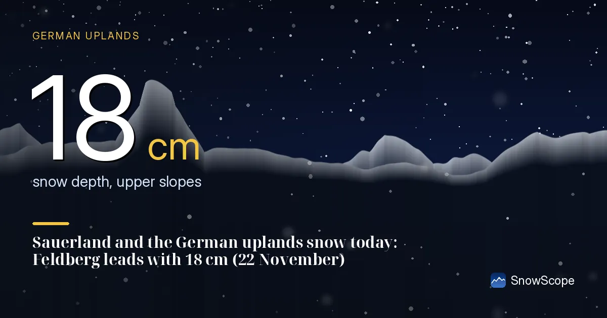
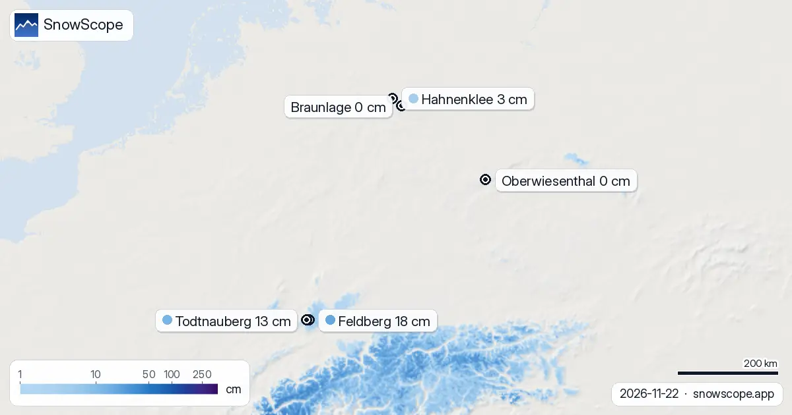

Sauerland and the German uplands snow today: Feldberg leads with 18 cm (22 November)
Feldberg stands alone with 18 cm of snow on its upper slopes this weekend, while Todtnauberg clings to 13 cm. The region saw heavy fresh snow in the past three days, with more on the way—but finding skiable conditions outside the two leaders means working with thin bases and hidden rocks.
See the live snow forecast for Feldberg in the SnowScope appSnow depth, powder alerts and the 3D map, free.
Where the snow actually is
Of the eight resorts in this region, only three report any snow at all. Feldberg at 1,446 m has 18 cm, Todtnauberg at 1,374 m has 13 cm, and Hahnenklee at 725 m has scraped together 3 cm. The rest—Braunlage, Oberwiesenthal, Winterberg, Willingen and Wurmberg—report zero depth or near-zero.
The pattern is clear: altitude matters. The two highest resorts caught enough recent snow to ski. Below 1,000 m, the base is too thin to protect the ground underneath. If you are thinking of visiting, height is not negotiable this week.
| Resort | Snow depth | New snow, 72 h | Coming, next days | Top |
|---|---|---|---|---|
| Feldberg | 18 cm | 30 cm | 9 cm | 1,446 m |
| Todtnauberg | 13 cm | 23 cm | 9 cm | 1,374 m |
| Hahnenklee | 3 cm | 0 cm | 0 cm | 725 m |
| Braunlage | 0 cm | 2 cm | 0 cm | 817 m |
| Oberwiesenthal | 0 cm | 4 cm | 1 cm | 1,211 m |
| Winterberg | 0 cm | 0 cm | 0 cm | 809 m |

Three days of heavy snow just ended
Feldberg received 30 cm of fresh snow in the 72 hours before 22 November—by far the most in the region. Todtnauberg caught 23 cm, and Oberwiesenthal picked up 4 cm. Everywhere else saw nothing or trace amounts. This dump is the reason Feldberg and Todtnauberg are still in the game.
That fresh snow fell on a thin early-season base, which means two things: first, the new powder will be soft and grippy on the groomed runs, especially on steeper terrain; second, rocks and stumps lurk just below the surface. Wax your skis before you go, and stay on marked pistes unless you have checked the avalanche bulletin and know the slope.
What is coming in the next three days
By 25 November, SnowScope shows 9 cm more snow at both Feldberg and Todtnauberg. Oberwiesenthal will gain 1 cm. The lower resorts will see little or nothing.
Nine centimetres is not a game-changer at either top resort, but it will refresh the pistes and help hold the base together. If you can visit between now and 25 November, go early in the week to ski the new snow when it is freshest; later in the week, sun and traffic will soften it.
Feldberg or Todtnauberg: how to choose
Feldberg has 5 cm more depth (18 cm versus 13 cm) and reaches 72 m higher. Its upper slopes will hold snow longer and ski more reliably. If you have only one day, Feldberg is the safer pick.
Todtnauberg is worth the drive if you prefer a quieter mountain or want to compare conditions side by side. The difference in base depth is small enough that snow quality, not quantity, will shape your day. Both lifts reach well above 1,300 m, where the air stays cold.
The reality of early-season touring
Thin snow on rocks means your first runs matter. Stick to groomed pistes where the snow has been worked and compressed. Off-piste skiing is possible only after you have read the local avalanche bulletin and chosen slopes you know well—a new line is not worth the risk when the base is this fragile.
Fresh snow on shallow ground also means the skis will grab an edge more easily. Bring wax, check your edge angles before you leave, and expect the surface to vary more than it would in deep winter. What feels grippy at 9 a.m. may turn sticky by midday as the sun touches even these high slopes.
Timing your trip from the Netherlands
Sauerland is a three- to four-hour drive from most of the Netherlands, making it a one- or two-day option. Feldberg is worth a weekend trip right now because it has the depth and the forecast; a weekday visit in the next few days will mean fewer queues and fresher snow at the top.
Winter tyres or chains are mandatory for the final kilometres to both resorts. Travel early to beat Sunday traffic at the border and lifts. By 25 November, if the forecast holds, the snow will be a little deeper and a little more settled—good reason to plan your visit for the end of this week.
Tips for skiers
- Drive to Feldberg if you have only one day. Its 18 cm and higher altitude give you the best chance of continuous runs without hitting rock.
- Fit winter tyres or chains before you leave. The road to 1,446 m gets slippery quickly in early November.
- Wax your skis the night before. Fresh snow on a thin base is abrasive and will slow you down without it.
- Check the local avalanche bulletin before you ski anywhere off the piste. Early-season avalanche risk is low but real, and rocks hidden under 30 cm of new snow are a bigger hazard right now.
- Start early and head for the upper slopes first. The sun will soften the surface as the day goes on, so ski the best snow while it is firm.
About these numbers
Resort snow depths are the deepest snow on the resort's upper slopes on the date shown; they are estimates for an area, not a measurement at one point. Forecasts can change. Always read the official avalanche bulletin before going off-piste.
Cite this report
For research, teaching or the press: the numbers and charts are free to reuse under CC BY 4.0 with this citation.
SnowScope (2026), Sauerland and the German uplands snow today: Feldberg leads with 18 cm (22 November), https://snowscope.app/blog/en/2026/11/sneeuw-sauerland-winterberg-22-november-2026.html, accessed 2026-11-22
SnowScope (Atlas Labs). (2026, November 22). Sauerland and the German uplands snow today: Feldberg leads with 18 cm (22 November). SnowScope snow reports. https://snowscope.app/blog/en/2026/11/sneeuw-sauerland-winterberg-22-november-2026.html
BibTeX
@misc{snowscope2026sneeuwsauerlandwinterber,
author = {{SnowScope (Atlas Labs)}},
title = {Sauerland and the German uplands snow today: Feldberg leads with 18 cm (22 November)},
year = {2026},
month = nov,
howpublished = {\url{https://snowscope.app/blog/en/2026/11/sneeuw-sauerland-winterberg-22-november-2026.html}},
note = {Published 2026-11-22 11:49 UTC; accessed 2026-11-22}
}· CC BY 4.0 · Methods, data and tools →
Feldberg: snow and temperature by height, this winter vs last (tools) →
Follow Feldberg
Free: a message when fresh snow is coming, and the forecast every morning.